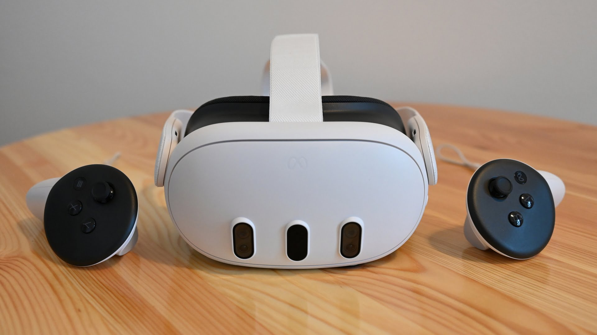
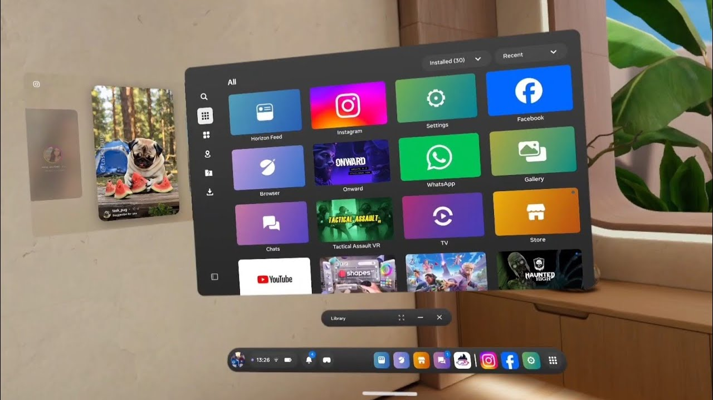
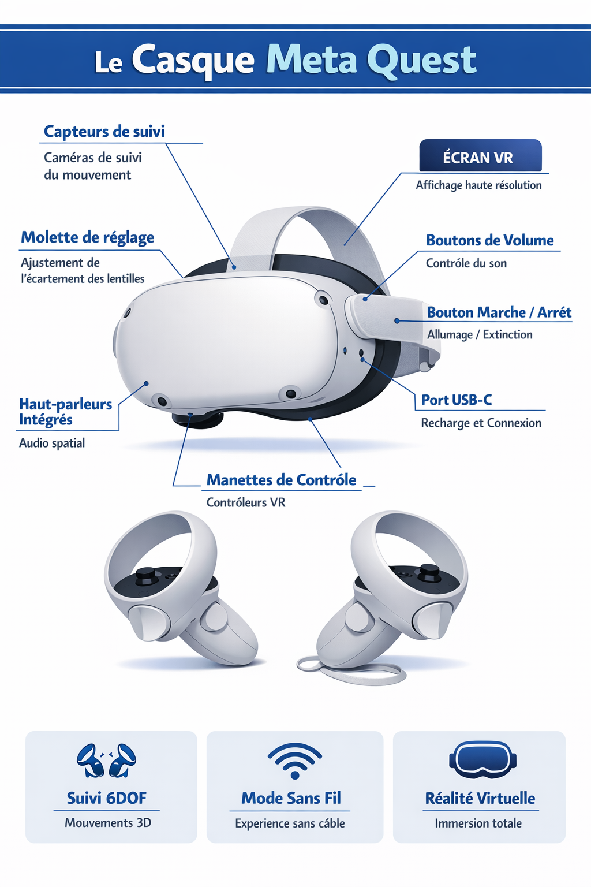
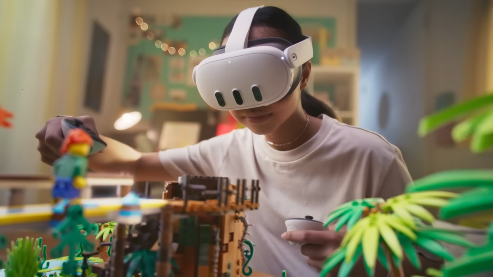
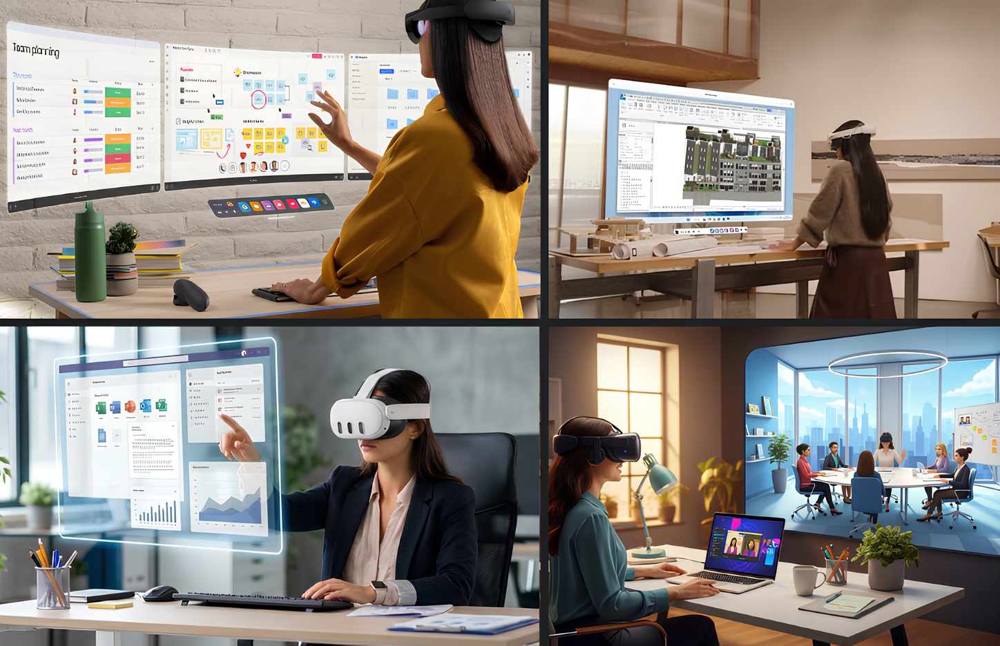

Comment la réalité virtuelle transforme-t-elle les usages dans différents domaines et quels sont ses enjeux, ses limites et son impact ?
La réalité virtuelle est une technologie immersive permettant de plonger un utilisateur dans un environnement numérique interactif. Elle est utilisée dans le jeu vidéo, la médecine, l’éducation et l’industrie.

La réalité virtuelle consiste à simuler un environnement en 3D grâce à un casque VR et des capteurs de mouvement.



La réalité virtuelle évolue rapidement avec des casques plus accessibles et puissants.

La VR évolue très vite mais reste limitée par le coût et les contraintes physiques. Elle va devenir un outil important dans le travail et le divertissement.
La réalité virtuelle est une technologie en forte croissance qui transforme plusieurs secteurs.
La réalité virtuelle est une technologie innovante mais encore en développement.